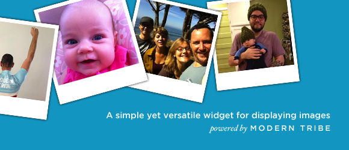
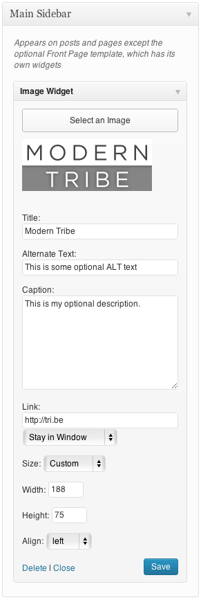

Sidebar is a most commonly used place for displaying banner ads and Images. Here, we shared a plugin called WordPress Image Widget, which adds a image widget in Appearance » Widgets section of your website. You can easily drag and drop the widget in sidebar, configure it and save it. I have shared the screenshot of widget’s configuration page and settings below. We have also shared a manual method at the end of this post for doing the same task which this plugin does.
Download Image Widget WordPress plugin
Download the plugin from below WordPress directory’s link
This is how the widget look like in your blog’s sidebar

Image courtesy Modern Tribe, Inc. – Developers of this awesome WordPress plugin.
As you see in the above snapshot that using this you can control following things –
- Image or banner height and width (Select Custom in drop down for Size field, then only you would be able to specify height and width).
- Image Alignment (Left/Right/Center).
- Image hyperlink (In case of banner ads, you can use cloaked affiliate links here).
- Caption (This is an optional field and can be avoided, whatever you write here would be displayed in the sidebar, just below the image/banner).
- Alt tag (Alternate Text) – This is used by search engine, since bots cannot judge what the image is all about, this field is used by them in order to understand the content of image.
- Image Title – A brief description about image, this would be visible when someone hovers on image.
Once you are done with these settings, you can simple press Save. That’s it!! You are done with everything. The widget should be displaying image or banner in the blog’s sidebar.
How to display images in sidebar without plugin – A manual method
If you know the basic HTML then you do not need this plugin. Go to Appearance » Widgets section and drag and drop a Text Widget into the sidebar. After that copy the below code in the widget, change the attributes as I stated below and save it.
<div style = "text-align:center">
<a href="http://www.easysteps2buildwebsite.com" target="_blank">
<img src="https://beginnersbook.com/abc.jpeg" height="150"
width="150" alt="alt text here"/>
</a>
</div>
Make the following changes in the above code in order to make it work for you –
1) Change the alignment of image by modifying the div style attribute.
<div style =”text-align: center”> – for center alignment
<div style =”text-align: left”> – for left alignment
<div style =”text-align: right”> – for right alignment
2) Give the target link in href field.
3) target=”_blank” for opening the target link in new window, if the requirement is to open the link in same window then remove this attribute.
3) Adjust Image height and width by changing the values in the code itself.
4) Give alt tag in the alt attribute of the image (replace alt tag here).
5) Give the image source (Path of the image/banner) in the src field of Img tag.
Let us know which method you prefer for showing images/banner ads in your website’s sidebar, manual method or by using WordPress plugin. If you are already using this plugin on your website/blog then do let others know your experience with it by dropping a comment below.
Leave a Reply